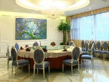
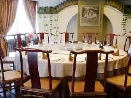
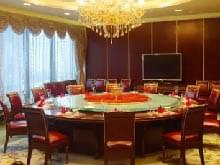
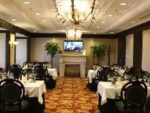
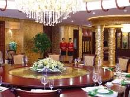
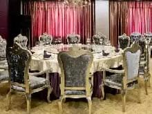

蒙牛带您寻味幸福招牌菜 [国贸商圈] | 淳朴的美味
齐鲁人家，从名字看就已经晓得是以什么菜系为主打了，没错这是以鲁菜为主的餐厅，餐厅环境很高档，装修的很高雅大方，菜品味道地道正宗，非常适合朋友间相聚。

蒙牛带您寻味幸福招牌菜 [中关村商圈] | 记忆中的味道
直隶会馆坐落于北京大学、清华大学附近，漫步在餐厅内外，时间积淀的气味扑面而来，这里被称为"能吃的博物馆"，整个餐厅以直隶历史文化为核心。

蒙牛带您寻味幸福招牌菜 [国贸商圈] | 从舌尖到心尖的美味
汇通四海大酒楼主要经营澳门特色海鲜火锅，更将粤、湘、徽三大菜系发扬光大！其菜品包含四大菜系共二百余个种类，让您在享受会所特有的优雅环境及周到服务的同时，尽享人间美味！

蒙牛带您寻味幸福招牌菜 [紫竹桥商圈] | 离别的乡愁
B名轩位于首体南路的新世纪饭店的32层，居高临下，颇有一览众山小的优越感。位居高处，把城市的热闹、繁杂放在一边，还原隶属于大自然的幽静。

蒙牛带您寻味幸福招牌菜 [中关村商圈] | 穿越时空的湘味情
浏阳河大酒楼有着浓郁湖湘文化的大厅，其巧夺天工的装修渗透着现代美，放眼望去，高级绣花的红地毯传递着喜庆吉祥的寓意、璀璨辉煌的灯光如发光的星星一样明亮、宽敞精美的舞台以及两侧点缀着的绿植，让人心旷神怡。

蒙牛带您寻味幸福招牌菜 [望京商圈] | 深海之味
朝尚食都真心大，环境不错，雅间里的水晶吊灯和古典的椅子无不体现奢华，虽是高档的装修却走的是亲民的价格和定位，家蒙牛带您寻味幸福招牌菜 [望京商圈] | 深海之味庭聚餐，商务宴请都很适合，门口有足够的停车位，很方便。餐厅主打湘菜和粤菜，能让人吃到不错的环境又挺实惠的价格，点100个赞。
返回顶部